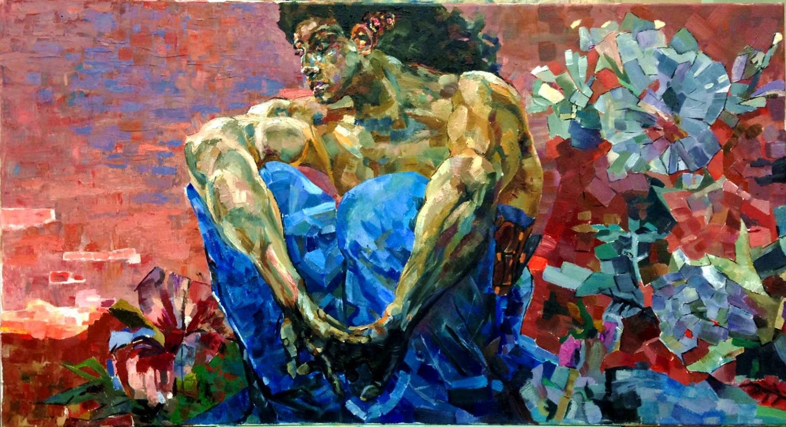
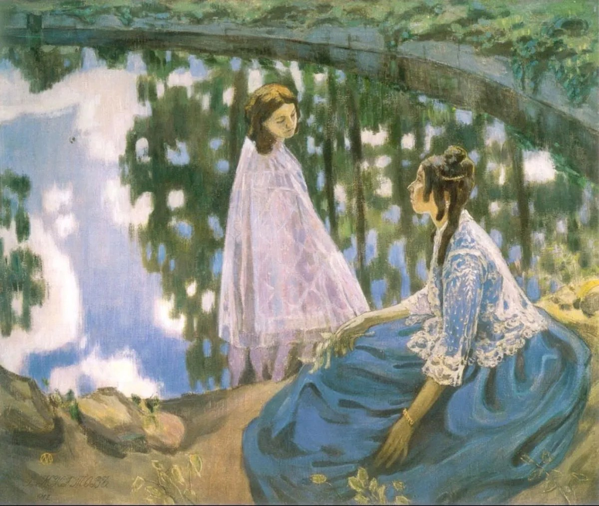
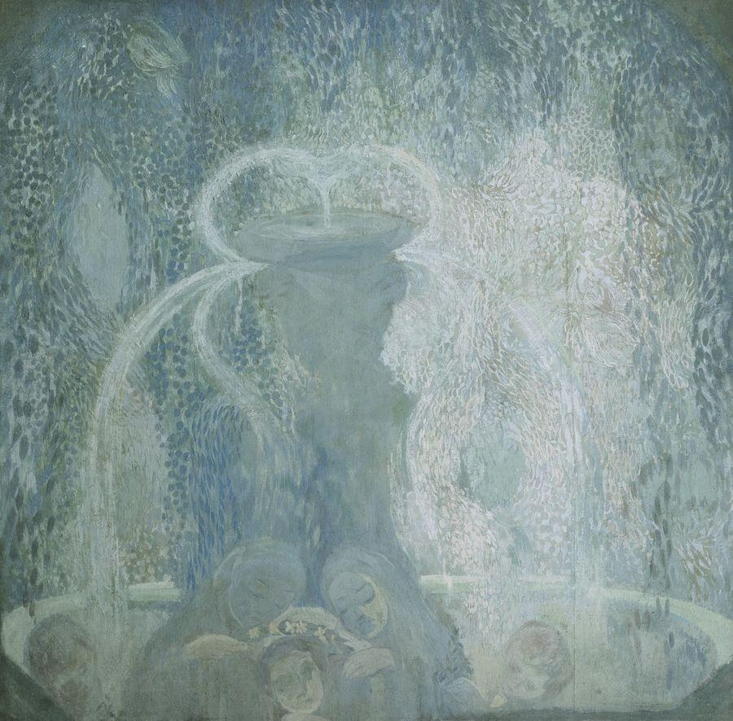

러시아 상징주의의 핵심 선구
러시아 상징주의는 유럽 상징주의의 공통 원리인 “외부 현실보다 보이지 않는 정신적 현실을 표현한다”는 생각을 공유하면서, 러시아의 정교회적 이미지 전통, 민속·신화, 세기말의 종교철학, 문학과 음악, 은시대(Silver Age)의 문화와 결합한 독자적 전개를 보였다. 회화에서는 미하일 브루벨과 빅토르 보리소프무사토프가 1890년대~1900년대 초의 핵심 선구이며, 1907년 청장미파(Blue Rose)가 보다 조직적인 두 번째 세대를 형성했다.
상징은 단순한 꿈 이미지가 아니라 종교·영혼·구원의 문제와 연결되기 쉽다.
러시아 이콘의 평면성·색채 기억과 민속·전설이 새로운 상징적 언어에 스며든다.
시·철학·음악·연극과 회화가 같은 문화권에서 밀접하게 교류한다.
푸른색·보라색·회색 같은 색조가 꿈·고독·신비의 정서를 조직한다.
청장미파의 평면화·색채·비자연적 공간은 러시아 전위미술의 전사 중 하나가 된다.
브루벨·네스테로프 등 각 화가가 서로 다른 방식으로 종교·신화·내면을 탐색한다.
실제 과거를 복원하기보다 기억과 꿈으로 재구성한 귀족 영지·여성의 세계를 만든다.
보다 공통된 색채와 형식언어를 찾는 두 번째 세대가 모스크바에서 성장한다.
파벨 쿠즈네초프·표트르 웃킨 등 젊은 화가들이 ‘Blue Rose’라는 이름으로 러시아 상징주의의 집단적 정체성을 보여준다.
러시아와 프랑스의 최신 미술이 교류하면서 일부 작가와 후속 세대가 추상·원시주의·전위미술로 이동한다.



푸른색과 장식적 평면을 통해 신비롭고 비물질적인 세계를 구성했다.
밤·바람·자연 같은 구체적 대상보다 그 대상이 만들어내는 분위기와 감정에 집중했다.
1907년 모스크바 전시는 ‘청장미’라는 이름을 러시아 상징주의의 대표적 집단명으로 굳히는 계기가 되었다.
러시아 상징주의의 모든 화가가 정교회 신앙을 동일하게 공유한 것은 아니다. 그러나 러시아 문화에서 이미지는 단순한 사물의 복제가 아니라 보이지 않는 정신적 세계를 드러내는 매개라는 오래된 이콘 전통은 중요한 문화적 배경이었다.
| 요소 | 러시아 상징주의에서의 의미 |
|---|---|
| 평면성 | 서구 원근법보다 색면과 윤곽을 강조하는 경향이 이콘·아르누보·후기 인상주의와 함께 작용한다. |
| 종교적 이미지 | 성인·천사·악마·수도원·옛 러시아의 이미지가 단순한 역사재현이 아니라 정신적 상징이 된다. |
| 민속·신화 | 러시아 전설과 민속적 모티프가 유럽 고전신화와 다른 민족적 상징언어를 제공한다. |
| 자연 | 풍경은 지리적 기록보다 영혼의 상태와 기억을 투사하는 공간이 된다. |
| 종합예술 | 회화가 문학·음악·무대·장식미술과 결합하며 은시대 문화 전체의 일부가 된다. |
| 항목 | 서유럽 상징주의 | 러시아 상징주의 |
|---|---|---|
| 공통 철학 | 보이는 현실보다 꿈·정신·신화·욕망·관념을 이미지로 암시한다. | |
| 주요 배경 | 프랑스·벨기에 문학, 세기말 문화, 신비주의와 반자연주의 | 유럽 상징주의 + 러시아 은시대 문학·종교철학·민속·이콘 전통 |
| 대표 이미지 | 신화·죽음·팜므파탈·꿈·고독 | 악마·천사·옛 러시아·기억 속 영지·몽환적 자연 |
| 색채 | 화가마다 매우 다양 | 브루벨의 보석 같은 색면, 보리소프무사토프와 청장미파의 푸른·보랏빛 분위기가 특히 중요 |
| 조직화 | 국가별로 다양한 그룹과 개인 | 1890년대 개인적 선구 → 1907 청장미파의 집단적 체계 |
| 후대 | 표현주의·초현실주의·아르누보 등에 영향 | 러시아 전위미술·추상·무대미술로 넘어가는 중요한 통로 |
| 국가·지역·세부 사조 | 지역적 특징 | 대표 화가·제작자 |
|---|---|---|
| 모스크바·키이우 — 선구와 청장미파 |
| 미하일 브루벨, 빅토르 보리소프무사토프, 파벨 쿠즈네초프, 표트르 웃킨 |
| 상트페테르부르크 — 미르 이스쿠스트바 |
| 알렉산드르 베누아, 레옹 박스트, 콘스탄틴 소모프 |
러시아 상징주의는 프랑스 상징주의의 수입을 넘어 정교회적 영성, 문학, 음악, 무대미술, 민족 신화가 결합한 은시대 문화다.
본문에 이름이 등장하는 주요 화가는 아래처럼 대표작 한 점과 함께 읽어야 한다. 작품은 해당 사조의 핵심 특징을 실제 화면에서 확인하도록 고른 것이다.
분절된 보석 같은 색면과 고독한 자세가 러시아 상징주의의 신화적 내면을 보여준다.
인물이 시간 밖의 꿈처럼 놓이며 음악적이고 회상적인 분위기를 만든다.
푸른 색조와 장식적 평면이 청장미파의 음악적·비물질적 분위기를 만든다.
밤과 자연의 분위기를 흐린 색조와 서정적 화면으로 바꾼 청장미파의 핵심 화가다.
18세기 궁정의 기억을 연극적 장면으로 재구성해 상트페테르부르크 상징주의의 역사 감각을 보여준다.
강렬한 색과 패턴으로 상징주의의 장식성을 국제 무대예술로 확장했다.
연극적 인물과 인공적인 풍경으로 현실에서 비껴난 감각적 세계를 만들었다.